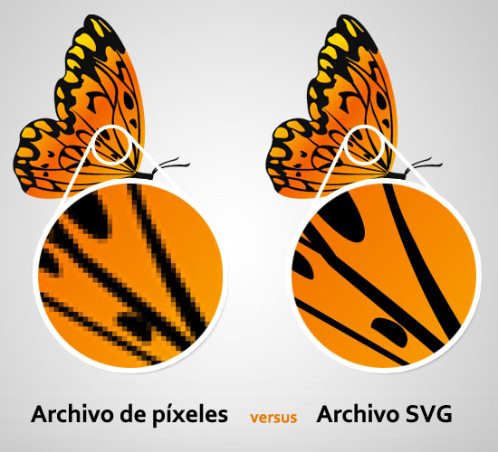

SVG
WANDERER | WANDERER | WANDERER WANDERER | WANDERER | WANDERER WANDERER | WANDERER | WANDERER WANDERER | WANDERER | WANDERER WANDERER | WANDERER | WANDERER WANDERER | WANDERER | WANDERER WANDERER | WANDERER | WANDERER WANDERER | WANDERER | WANDERER WANDERER | WANDERER | WANDERER WANDERER | WANDERER | WANDERER WANDERER | WANDERER | WANDERER
Gráficos vectoriales escalables
En los primeros das de la Web, hubo una explosión de diferentes formatos
y extensiones de HTML. Desde el principio, quedo claro que un formato de
grafico vectorial para la Web sería útil. Chris Lilley redactor un
documento para los requisitos generales de gráficos vectoriales en 1996.
Origen de SVG
En 1998, el panorama se había estabilizado un poco, y
este año hubo seis presentaciones en competencia al W3C
en el área de gráficos vectoriales web:
Como resultado, se creó el SVG WG (working group). Las compañías
tenían diferentes ideas sobre sus especificaciones. Por ejemplo,
Adobe dijo que PGML era solo una propuesta y estaba felices de
que W3C lo modificara de alguna manera. Pero Microsoft dijo que
VML era documentación de un producto ya implementado y que W3C no
estaba autorizado a realizar ningún cambio. El SVG decidió no
“desarrollar” ninguna de las presentaciones, sino desarrollar
un nuevo lenguaje.
SVG se convirtió en una recomendación del W3C en septiembre de 2001. La segunda
edición de SVG 1.1 es una recomendación del W3C y es la versión más reciente de
la especificación completa.
SVG 2 se encuentra actualmente en desarrollo y agregara nuevas características de
facilidad de uso a SVG, así como una integración más cercana con HTML, CSS u DOM,
y características obsoletas que no son compatibles con todos los navegadores. El
grupo de Trabajo SVG esta trabajando actualmente en paralelo en un conjunto de
módulos para extender especificaciones anteriores y agregar funcionalidad a CS,
y la nueva especificación SVG 2 combinara esos módulos con el resto del marco SVG
para trabajar en toda la gama de dispositivos y plataformas.

Formatos de imágenes digitales
Los archivos SVG son compactos y ofrecen gráficos de alta calidad en Internet, en
impresoras e incluso en dispositivos portátiles. El usuario puede aumentar la vista
de un SVG en la pantalla sin sacrificar la calidad.
Está basado en XML y ofrece muchas ventajas tanto para desarrolladores como para
usuarios. Se puede utilizar XML y JavaScript para crear gráficos web que respondan a
las acciones del usuario con efectos sofisticados, como el resaltado, la información
de herramientas, el audio y las animaciones.
Ventajas del formato SVG
Soporte del navegador
SVG es compatible con todos los navegadores modernos para computadoras de escritorio
y móviles. Algunas funciones, como la animación SMIL y las fuentes SVG, no son tan
compatibles. Existen muchas herramientas de creación de SVG, y la exportación a SVG
es compatible con las principales herramientas de creación de gráficos vectoriales.